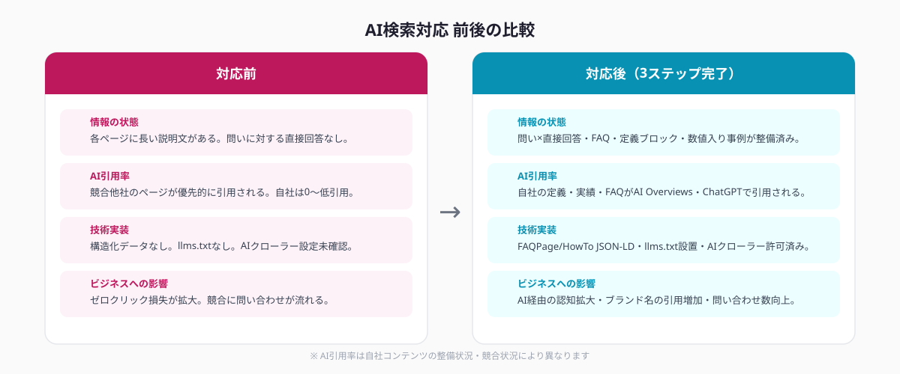
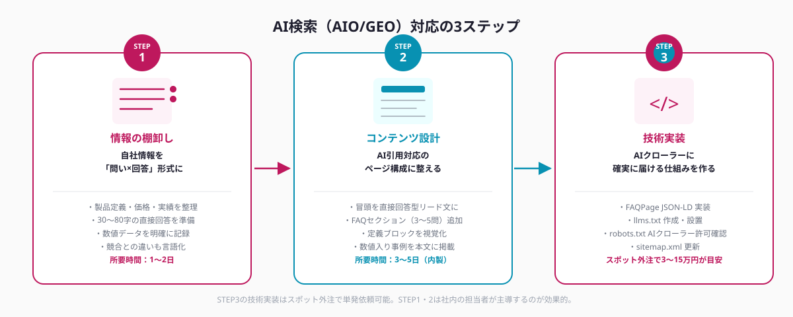

AIO/GEOとは何か・なぜ2026年に対応が急務なのか
2026年、検索体験は大きく変わりました。GoogleはAI Overviews（旧SGE）を日本語検索に本格展開し、ChatGPT・Perplexity・Claudeなどの対話型AIが検索エンジンとして日常的に使われるようになっています。その影響を示す2つの言葉を整理します。
GoogleのAI Overviews（検索結果上部に表示されるAI生成サマリー）に自社情報が引用・掲載されるよう、コンテンツや技術実装を最適化すること。2026年8月現在、日本語検索で主要クエリの30〜40%にAI Overviewsが表示されており、最上位の注目エリアを占める。
ChatGPT Search・Perplexity・Claude等の生成AI検索エンジンで自社情報が引用・回答に含まれるよう最適化すること。従来のSEO（Googleランキング最適化）とは評価軸が異なり、「構造化・具体性・信頼性」が引用の鍵になる。
これらが重要な理由はシンプルです。AI Overviewsに引用された情報は、ユーザーが「続きを読みに来なくても」その場で回答として消費されます。つまりゼロクリック（=自社サイトへのアクセスがないまま情報が伝わる）が増える一方、引用されなかった企業は「存在しないのと同じ」状態になりえます。
特に製品・サービス・料金・実績などを正確に伝えたい企業にとって、「AIが正しく引用してくれるかどうか」は競争力に直結します。競合他社が最適化した情報を提供している場合、AIは競合の情報を優先的に引用します。
対応しないと起こる3つのリスク
① 競合の情報がユーザーに届く
「〇〇業界 おすすめサービス」「〇〇ツール 比較」といったクエリのAI Overviewsに競合名が並び、自社名が出てこない状況が実際に発生しています。特にBtoB製品・専門サービスは調査フェーズでのAI利用率が高く、ここで認知される/されないの差が商談数に直結します。
② 自社情報が誤って引用されるリスク
AIは学習データや外部サイトの情報をもとに回答を生成します。自社サイトに「AIが引用できる明確な情報」がない場合、古い情報・競合との比較ページ・口コミサイトの内容が根拠になり、不正確な内容が「自社の情報」として伝わるケースがあります。
③ 既存SEOの効果が薄まる
AI Overviewsが表示されるクエリでは、1〜3位の有機検索クリック率が平均で15〜30%低下するとされています。SEOでの順位維持にコストをかけつつ、AI引用対応を放置すると、同じキーワードへの投資対効果が年々悪化します。
AI検索対応の3ステップ

ステップ1｜自社情報を「AIが引用しやすい形」に棚卸しする
まず、自社の製品・サービスに関して「ユーザーがAIに聞きそうな質問」を20〜30個書き出します。
棚卸しで整理すべき情報の5カテゴリ
- 定義・概要：「〇〇とは何か」「何ができるサービスか」
- 費用・価格：「料金の目安」「初期費用はいくらか」
- 実績・事例：「どんな企業が使っているか」「導入後の効果は」
- 他社との違い：「既存の方法との違い」「選ばれる理由」
- 手順・使い方：「どうやって始めるか」「何から手をつけるか」
それぞれに対して、「30〜80字で直接答えられる短文回答」を用意します。長い説明は後ろに続けてよいですが、最初の1文が回答のコアになるよう意識します。AIは回答の最初の1〜2文を引用することが多いためです。
数値を具体的に入れることが引用率向上の最重要ポイントです。「コストを削減できます」ではなく「初年度のコストを平均32%削減した実績があります」のように、引用した側が「根拠として使えるデータ」を含める情報を優先します。
ステップ2｜AI引用対応コンテンツを設計・制作する
棚卸しした情報をもとに、各ページを「AIが引用しやすいフォーマット」に整えます。4つの要素を実装します。
① 直接回答型リード文（各ページの冒頭）
ページの冒頭の1〜2文を「そのページが答える主な問いへの直接回答」にします。「〜について解説します」という導入文ではなく、「〇〇は△△で実現できます。費用は〜が目安です」という形式です。AIはページの最初の200字を重視して引用候補として評価します。
② FAQセクション（各ページの下部）
ページ下部にQ&Aを3〜5問設置します。各質問は「ユーザーがAIに実際に聞きそうな口語表現」に近づけ、回答は50〜100字で完結させます。ChatGPTやPerplexityはFAQ形式のコンテンツを「引用しやすい単位」として認識する傾向があります。
③ 定義ブロック（専門用語・サービス固有の概念）
「〇〇とは」という定義説明は、本文に埋め込まず枠囲みや太字で視覚的に独立させます。AIは明確に区切られた定義文を「信頼できる一次情報」として引用しやすいとされています。
④ 数値入り事例・実績の掲載
「〇業種のクライアントで△△日・□万円で導入完了」「導入企業の平均工数削減率72%」など、具体的な数値と業種・状況を組み合わせた実績情報を本文に含めます。AIは根拠として引用できるデータを積極的に使う傾向があります。

ステップ3｜技術実装でAIクローラーに確実に届ける
コンテンツを整備したら、技術面でAIクローラーが情報を正しく読み取れる環境を整えます。
① FAQPage JSON-LD の実装
FAQセクションの内容を `FAQPage` スキーマで構造化データとして記述します。GoogleのAI Overviewsは構造化データを参照して引用候補を評価するため、HTML上のFAQとJSON-LDを一致させることが重要です。
② HowTo JSON-LD の実装（手順コンテンツに適用）
「〇ステップで△△する方法」という手順コンテンツには `HowTo` スキーマを追加します。各ステップに `name`・`text` を記述することで、AIが各ステップを単体で引用できるようになります。
③ llms.txt の設置
サイトルートに `llms.txt` を設置し、AIが参照すべき重要ページのURLとその概要をリスト化します。ChatGPT・Claudeなどの主要AIは `llms.txt` を優先的に参照してサイト情報を取得する傾向があります。Google AI Overviewsへの直接効果は未確認ですが、入り口を開けておくコストは低く、導入を推奨します。
④ robots.txt の確認
`robots.txt` でGPTBot・ClaudeBot・PerplexityBot・Google-Extended 等の主要AIクローラーをブロックしていないことを確認します。意図せずブロックしているケースが小規模サイトで散見されます。
⑤ sitemap.xml + Search Console インデックス登録
最適化したページのURLを `sitemap.xml` に追記し、Search Consoleでインデックス登録をリクエストします。AI Overviewsの引用候補はGoogleがクロール・インデックス済みのページから選ばれるため、インデックス状況の確認は必須です。
技術実装はスポット外注で効率化する
ステップ1・2の情報棚卸しとコンテンツ制作は、自社のことを最もよく知る社内チームで進めるのが理想的です。一方でステップ3の技術実装（JSON-LD・llms.txt・robots.txt確認・sitemap更新）は、フロントエンド開発の知識が必要なため、担当者がいない企業では進まないまま放置されがちです。
こうした「一度やれば完成する単発タスク」はスポット外注に向いています。
スポット外注で依頼できる技術タスクの例
- 既存ページへのFAQPage JSON-LD・HowTo JSON-LD の実装（主要5〜10ページ）
- llms.txt の作成とサーバーへの設置
- robots.txt のAIクローラー許可設定の確認と修正
- sitemap.xml への最適化対象ページの追加
- GA4でAI Assistantチャネルの計測設定（参照元タグの設定）
これらをまとめて1〜2日のスポット対応として依頼する場合、費用は3〜15万円程度が目安です。社内でエンジニアを採用・育成するコスト、または既存の月額契約ベンダーに追加依頼するコストと比べると、はるかに低コストで完了します。
ANKENでは、こうした「一度きりの技術的なタスク」を経験豊富なスポットエンジニアに単発で依頼できます。要件が固まっていない段階からの相談も歓迎しています。
よくある質問
- Q. AIO/GEO対応にかかる費用の目安はいくらですか？
- A. コンテンツ整備は既存情報の加工が中心のため、ツール費用はほぼゼロです。技術実装（JSON-LD・llms.txt等）をスポット外注した場合の費用は3〜15万円程度が目安です。
- Q. AI検索対応すると従来のSEOはどうなりますか？
- A. 基本的に補完関係にあります。E-E-A-T重視・構造化データ・直接回答型コンテンツはSEOにも有効であり、AIO対応は既存SEOをさらに強化します。
- Q. どのAI検索エンジンを優先的に対応すればよいですか？
- A. 2026年現在はGoogle AI Overviewsが流入への影響が最大のため最優先です。次いでChatGPT Search、Perplexityの順で対応を進めるのが効率的です。
まとめ
自社製品・企業情報をAI検索（AIO/GEO）に対応させるポイントは3つです。①情報を「問い×直接回答」の形式に棚卸しする、②各ページの冒頭・FAQセクション・定義ブロックを整備してAIが引用しやすい構成にする、③FAQPage JSON-LD・HowTo JSON-LD・llms.txtを実装してAIクローラーに確実に届ける。
コンテンツ設計（ステップ1・2）は自社の専門知識を持つ担当者が主導し、技術実装（ステップ3）は経験あるスポットエンジニアに単発で依頼するという分担が最も効率的です。2026年現在、AI検索への引用有無は集客・問い合わせ数に直接影響を与える段階に入っています。後回しにするほど、競合との差が広がります。